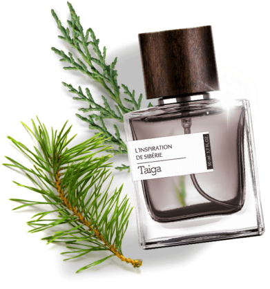

Тайга: свежесть сибирской сосны врывается в знойный лесной букет, раскрывая тайну природной силы!
210 €НАТУРАЛЬНЫЙ ТРАВЯННОЙ ПАРФЮМ
Нежность и весна в одном флаконе! Прозрачный, чистый, влажный аромат свежесорванных весенних цветов для романтичной, хрупкой девушки. Идеально для тех моментов, когда хочется романтики, нежности, беззаботности и весны в душе.
Тайга: свежесть сибирской сосны врывается в знойный лесной букет, раскрывая тайну природной силы!
210 €Свежее дыхание свободы: легкий ветер на вершине скалы, нагретые солнцем камни, зелень тайги, мягкие древесные ноты…
250 €Алтайское лето: дыхание ветра, свежесть горных озер, нежные лепестки растений и легкое головокружение высокогорья.
180 €GUCCI Memoire D´Une Odeur - Это элитные духи с фужерным ароматом для женщин и мужчин. Элегантный и эксклюзивный аромат. Открывается изысканными нотками римской ромашки, дополненными легкими акцентами горького миндаля.
В сердце парфюмерной воды переливаются нежные оттенки лепестков кораллового жасмина и чувственного мускуса, а в шлейфе аромата от Gucci звучат теплый сандал, бархатистые ноты кедра и изящная ваниль.